As an architect, I used to observe reality in order to find a balance between logic and intuition. I attach great importance to the conceptual framework and always look for the essence. The rather rigid interplay of lines, which results from a grid or mathematical statistics, is expressed in my drawings and the preference for materiality and spatiality. These works meet the unexpected in an uneasy juxtaposing, often opening themselves to the movement, the organic matter and the themes of memory while balancing the self-confinement and sense of control. My attraction to things that are not so rigid and rational brought me from the notions of architecture into visual arts. I am fascinated by the sea, by the hidden life it harbours. The love life of the octopus (1965) by Jean Painlevé fed that admiration for nature and inspired me to work with seaweed in my previous works. Thanks to the organic shapes, it looks particularly elegant and repulsive at the same time. By integrating plants into the rigid structure of my work, based on architectural plans, I try to control the controllable, as it were. But I soon discovered that nature (outside and within) does not allow itself to be compartmentalized.
My work is situated between emotion and ratio. Thus, I often start from the emotion that eventually turns into a written text that helps me to further investigate spatiality and the use of mixed media. Transparency, the juxtaposition between mechanical and human action, the exploration of the fluidity and invasiveness of nature in contrast to the controlled and impersonal language of machines/technology.


 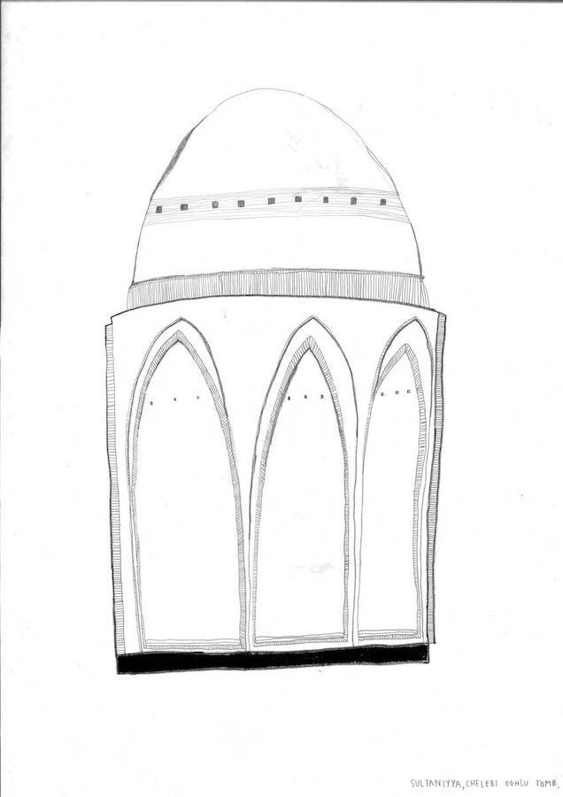
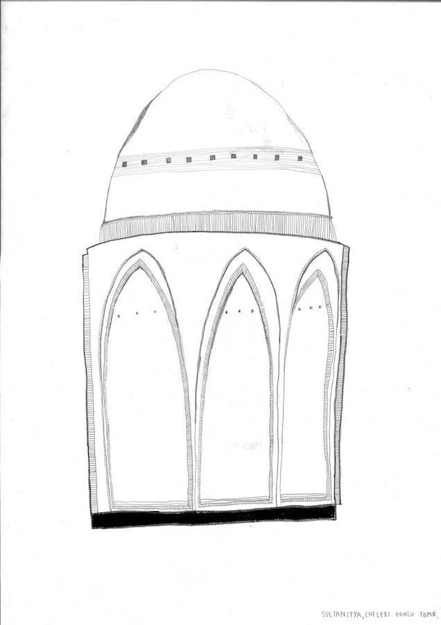


 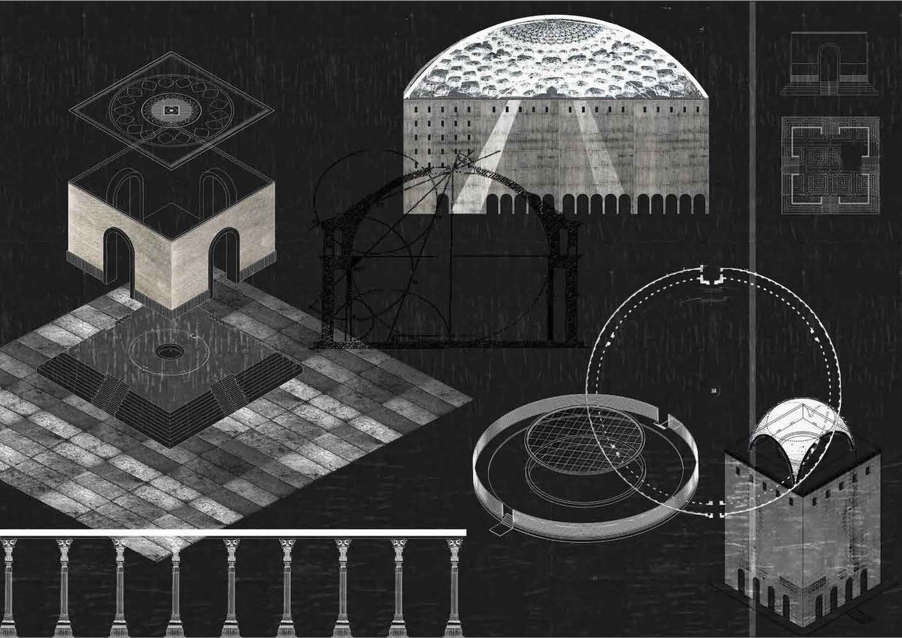
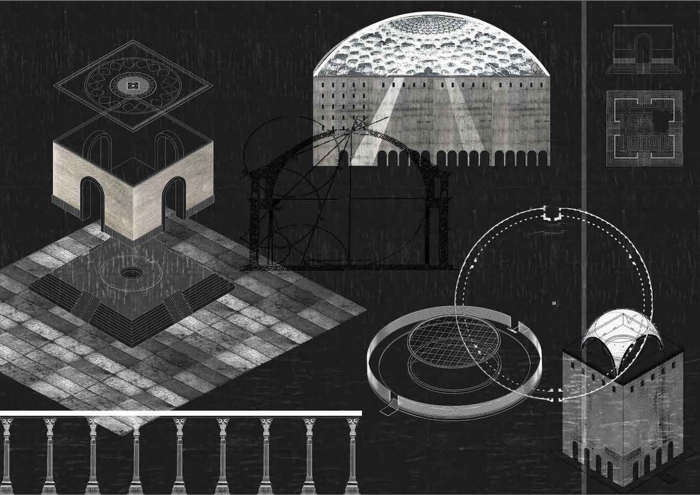


 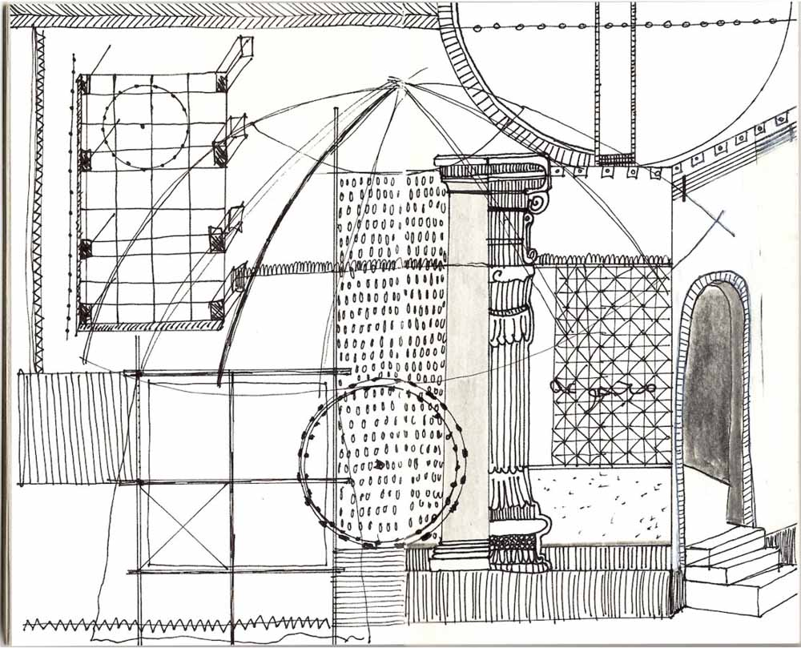
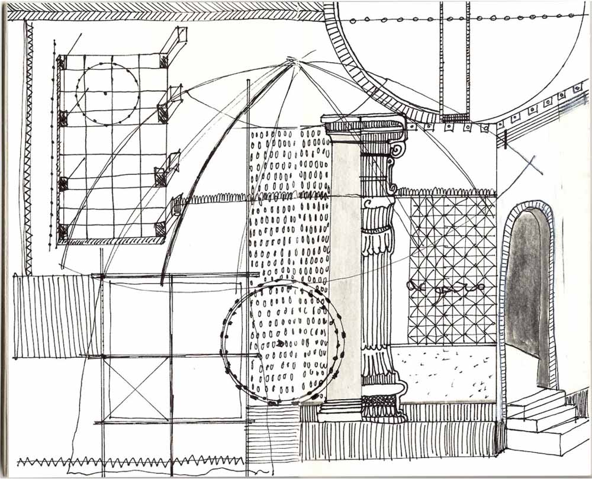

 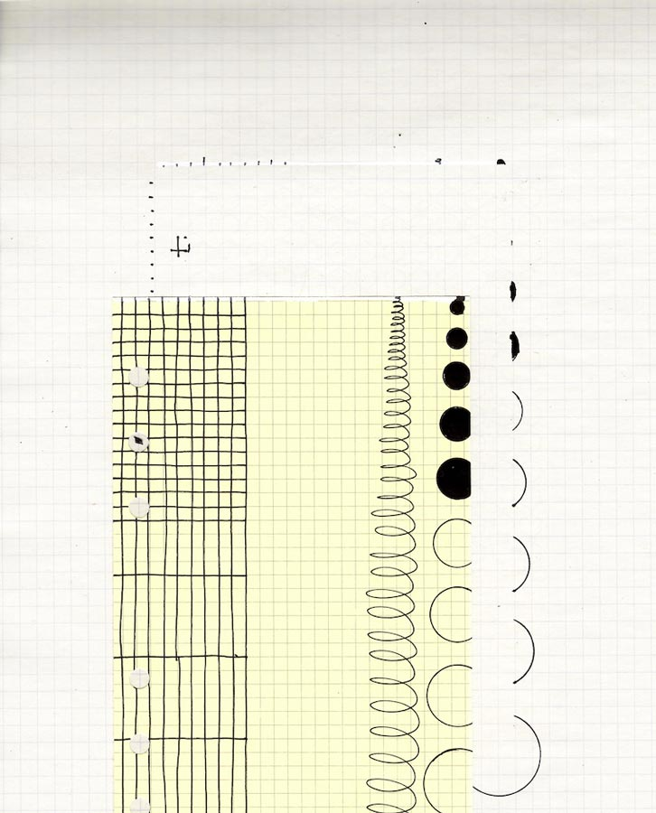
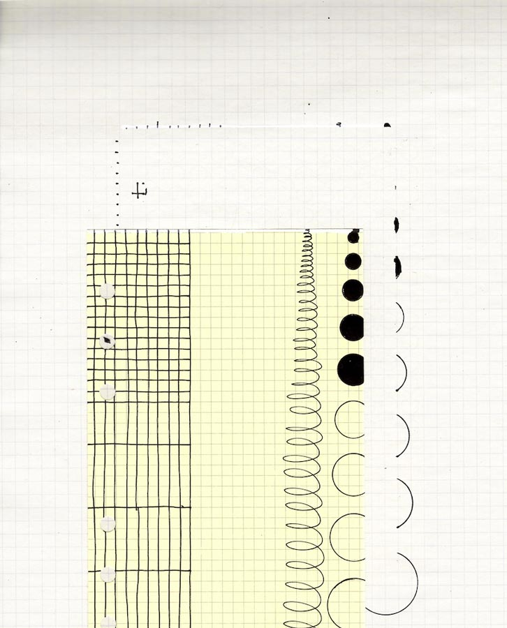

 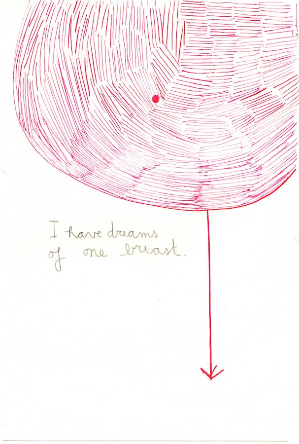
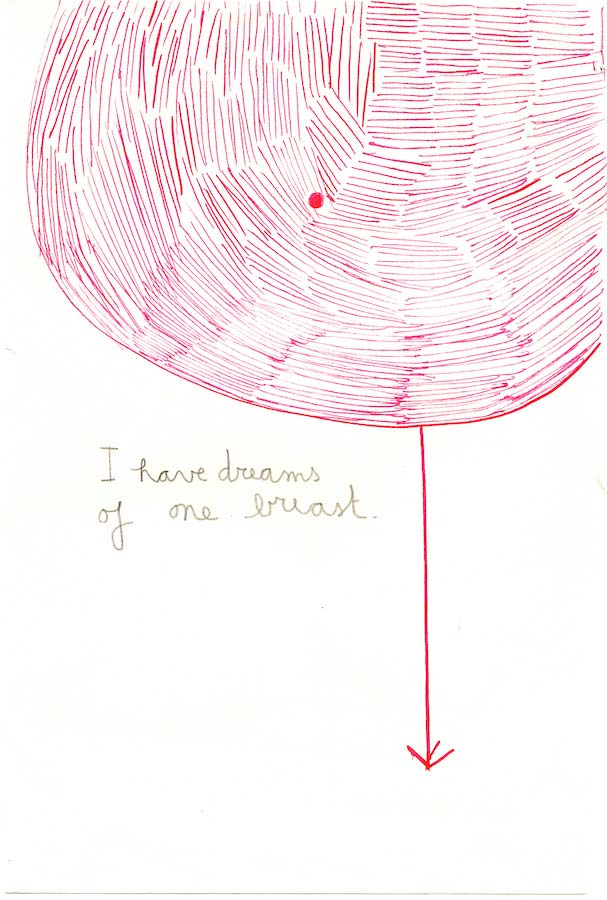


 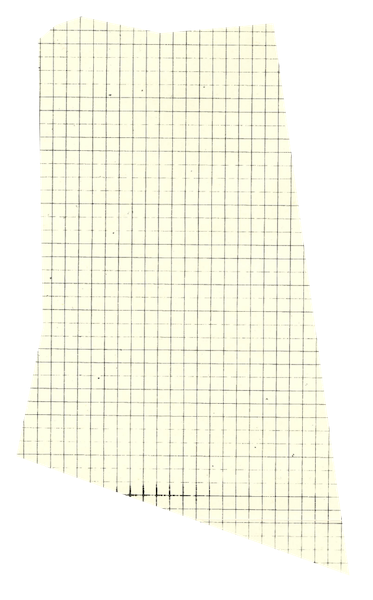
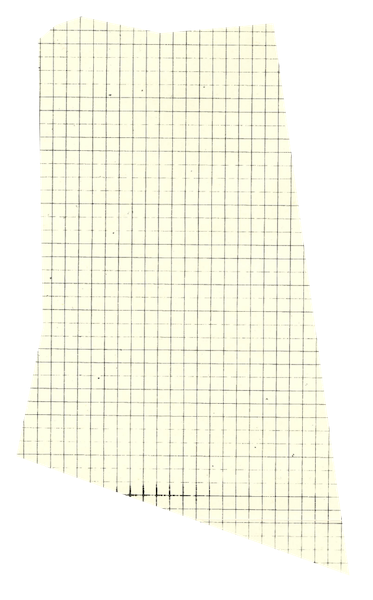


 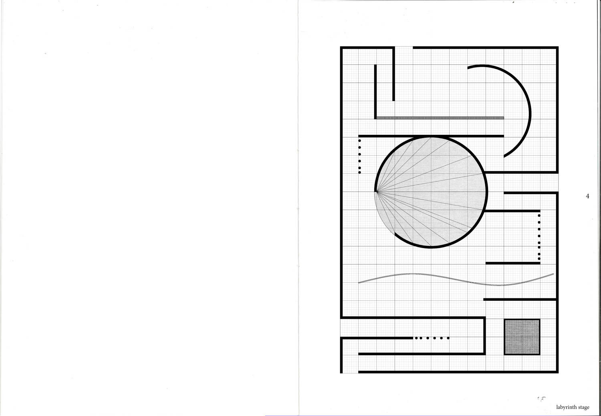
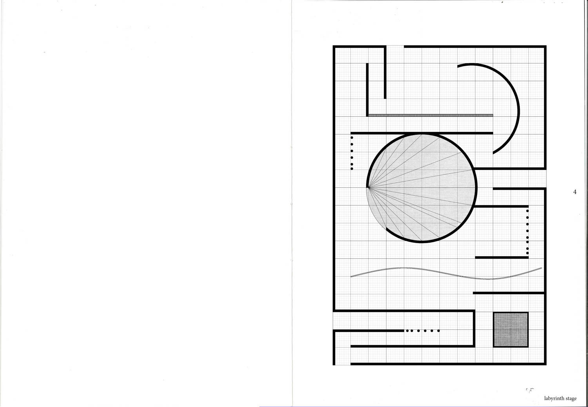